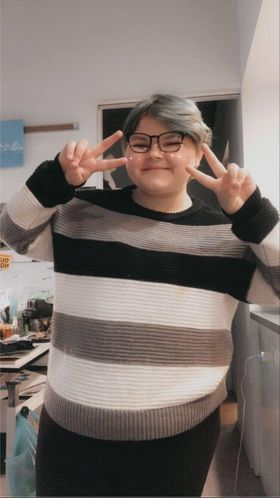

Hello! I'm Hannah Lambert, a 19 year old photography major who is attending Cleveland Institue of Art.
I am from Ohio and work in the northern area. Photography has always been my passion.
Since I was a young child, I always have wanted to work in the film/photo industry.
I take pride in my images and hoping one day that I can either open my own studio or become a
freelance photographer. I own a small company that I started a few years ago, to start up my
career in photography. As much as I love photography and film, I still see endless possibilities in the art
world that I am hoping to get the chance to do some of them. For example I tried game design as an elective
and overall it was awesome and I would do it again.
